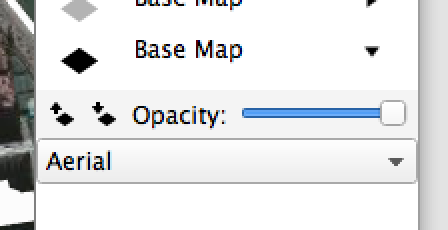

Layer Controls¶
Current Layer¶
At any time, only one layer can be the current layer even though many layers may be visible.
To make a layer current, click its name in the layer panel.
The name current layer will be shown in blue. All other layer names will be shown in black.
Note
Only shape layers can be made the current, so clicking base map layer names will have no effect. This also means that when GeoCanvas starts, there will be no current layer, since there are only base map layers by default.
- The current layer is the shape layer to which new attributes are added when Add Attributes to Layer is selected from the File menu.
- The current layer is also the selectable layer. Only shapes on the current layer can be selected with the selection tool.
Visibility Toggle¶
The control to the left of a layer’s name in the layer panel is its visibility toggle. The visibility toggle indicates whether the layer is Off  , 2D
, 2D  , or 3D
, or 3D  .
.
- Base map layers can be Off , or 2D .
- Shape layers can be Off , 2D , or 3D .
To switch between modes, click on the icon.
Note
The Visibility Limit control (explained below) also determines the visibility of shape layers. If your layer is not appearing, first make sure it’s in 2D or 3D mode, and then check its visibility limit.
Show / Hide Controls¶
The arrow to the right of the layer name shows and hides additional controls for each layer. There are a common set of controls shown for all layers, plus some that depend on the layer type, that is, whether the layer is a base map layer or shape layer.
Layer Up and Down¶
 and
and  move layers up and down in the list.
move layers up and down in the list.
Layers closer to the top of the list are drawn above layers lower in the list.
Opacity¶
The opacity slider controls how much you can see through the layer to layers below.
Background Image¶
The Background Image control is only available for base map layers. This drop down menu lets you select which set of images to use; e.g. Aerial photos, conventional street maps, labels, or stylized maps.
{kind=link}
Outline Visibility¶
 This icon indicates outlines are shown. Click to hide. Only available for shape layers.
This icon indicates outlines are shown. Click to hide. Only available for shape layers.
 This icon indicates outlines are hidden. Click to show. Only available for shape layers.
This icon indicates outlines are hidden. Click to show. Only available for shape layers.
Delete Layer¶
 Click to delete layer. Only available for shape layers.
Click to delete layer. Only available for shape layers.
Visibility Limit¶
This is the visibility limit control.
{kind=link}
A black line is shown beneath all of the zoom levels at which the current layer is visible.
- Click the
 icon to make the layer visible at greater distances.
icon to make the layer visible at greater distances. - Click the
 icon to make the layer hidden at greater distances.
icon to make the layer hidden at greater distances.
Each colored dash represents a zoom level. The zoom level corresponds to the distance of your viewpoint from the surface. Zoom levels toward the left are further from the surface.
As a shortcut, you can also click directly on the colored dashes to set the visibility limit to a specific zoom level.
The magnifying glass is shown above the current zoom level. Change the current zoom level with the  zoom in and
zoom in and  zoom out buttons on the toolbar.
zoom out buttons on the toolbar.
When the magnifying glass is within the range of zoom levels with a black underline, (as shown below) the layer will be visible.
When the magnifying glass is outside the range of zoom levels with a black underline, (as shown below) the layer will be hidden.

Note
While it’s tempting to make all layers visible at the maximum possible distance, it’s not always a good idea. The more shapes that are visible, the more likely things are to slow down. Depending on how much memory your computer has, showing too much at once could cause pretty significant performance issues.
The colors of the dashes indicate which zoom levels are likely to result in a good balance of performance versus convenience.
- Green dashes indicate recommended zoom levels.
- Yellow dashes indicate allowed zoom levels.
- Red dashes indicate forbidden zoom levels.
If you’re experiencing sluggish performance, or crashes, try reducing the visibility limit. That is, make the black line shorter for layers that have many, or very detailed shapes.